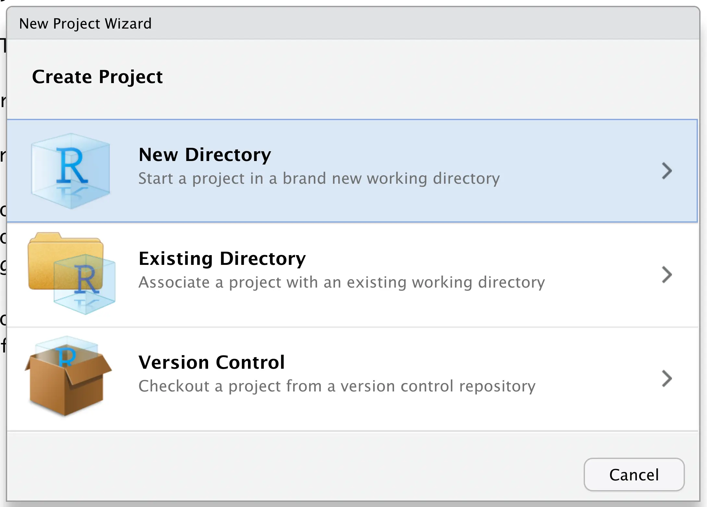
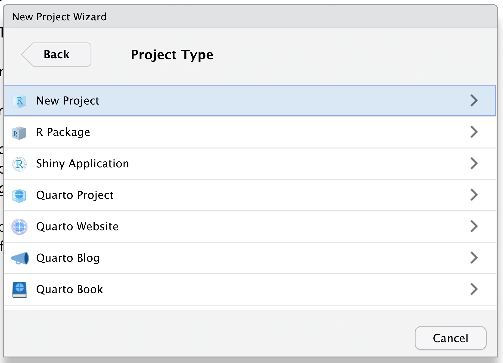
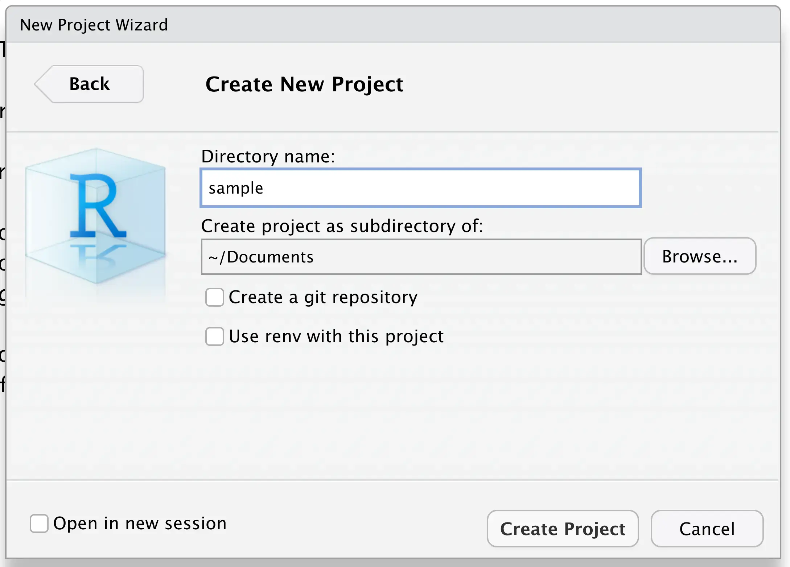

# Absolute path to projects.qmd
fs::path_abs("projects.qmd")/Users/clente/Documents/beautiful-r/projects.qmdIf you followed my advice up until now, you should have created a folder in your computer for all coding projects, your .Rprofile should be as clean as possible (or ever better: untouched), and your R installation should be up-to-date. Last but not least, you should also have chosen a code editor that suits your needs.
Now it’s time to start coding! Or rather, it’s time to start to think about coding. In this chapter I’ll talk about file paths (again) and how to set up your first R project.
Unfortunately, the nomenclature here isn’t the best. When I talk about a “project”, I’m referring to a school or work project, something that requires its own folder on your computer. Conversely, when I talk about an “R project”, I’m referring to the R’s ability to set your working directory automatically.
Most of us live our whole lives without ever having to worry about absolute and relative paths. Unfortunately these are important concepts in programming and you should at least get acquainted with them at some point. I’ll do my best to explain them here, but you can always read this Wikipedia article on this subject for a more in-depth explanation.
Let’s start with an example: you and I are coworkers and I need you to find a document that I forgot on my desk. Here are my initial instructions:
Go to the lobby of our office building.
Take the elevator to the Users floor.
Find the desk with my name on it.
Open the second drawer, where I keep all of my documents.
Look for the folder labeled beautiful-r.
Grab the document titled projects.qmd.
This is a pretty decent set of instructions, but they are a bit too detailed; if I needed another document, I wouldn’t want you to go back to the lobby again and start from scratch. Besides, if we moved offices, I’d have to completely change these instructions! Ditto if I left the folder on someone else’s desk.
But, since you’re my coworker, what if I assumed you already knew where my beautiful-r folder was? We were at the office the whole week and you saw me working on beautiful-r, I don’t need to explain to you where I left it. In this case, I could give you much shorter instructions:
Find my folder labeled beautiful-r.
Grab the document titled projects.qmd.
Way simpler, right? As you have probably guessed by now, the first type of instruction represents absolute paths and the second represents relative paths. An absolute path starts at what is called the root directory (i.e. the lobby) and a relative path starts at the working directory (i.e. the folder I was working on).
In order to construct an absolute path, you must start from the root directory of your computer. On Linux/MacOS it is simply /, while on Windows it is a drive (usually C:/). This is what the absolute instructions from last section would look like as a path on my MacOS computer:
# Absolute path to projects.qmd
fs::path_abs("projects.qmd")/Users/clente/Documents/beautiful-r/projects.qmdOn the other hand, in order to determine the relative path to a file, first you must set your working directory. I’ll explain how to do this in the next section; for now, this is what my current working directory looks like:
# My current working directory
fs::path_wd()/Users/clente/Documents/beautiful-rA relative path is simply an absolute path minus your current working directory and any spare slashes. This is what the relative instructions from last section look like as a path:
# Relative path to projects.qmd
fs::path_rel("projects.qmd")projects.qmdArmed with this knowledge, take a look this small slice of the beautiful-r folder on my computer (my current working directory). What is the relative path to renv.qmd? What about rstudio_screenshot.webp?
.
├── images
│ ├── rstudio_screenshot.webp
│ └── vscode_screenshot.webp
├── projects.qmd
└── renv.qmdIn both cases, we can ignore anything that is outside of my working directory. The first requested path is simply references.qmd, and the second is images/rstudio_screenshot.webp
As you can see, relative paths don’t depend on your computer’s structure, just the structure of the directory you’re working on. If I reference an absolute path in my code and then ask you to run it, it’ll never work as you probably don’t have a /Users/clente/ folder on your machine. This is why we must always use relative paths in our code.
Since relative paths depend on your working directory, we need a way to set it automatically every time we change the project we’re working on. We’re going to do this using R projects.
You might have heard of a different way to set your working directory called setwd(). If you use this function regularly, I urge you to stop. There are too many ways of breaking setwd(), so using R projects is the way to go.
An R project is just a regular folder with an Rproj sentinel file. Thus, every time you open an R project, its sentinel will set your working directory to be the folder you just opened.
There are two ways to create R projects: through RStudio’s built-in menu or with the usethis package. I like the latter method better, but the choice is up to you.
For the first method, go to File > New Project and select New Directory:

Then select New Project:

Finally, choose your project’s name and select where it’s going to live:

Once you’re done with this process, RStudio will automatically open your new R project. If you want to switch R projects, simply go to File > Open Project…
If don’t use RStudio or want a reproducible R project setup, then you’ll need usethis::create_project(). This function takes the absolute path to a (non-existing) folder and creates it as an R project.
# Create a project with usethis
usethis::create_project("/Users/clente/Documents/sample")✔ Creating '/Users/clente/Documents/sample/'
✔ Setting active project to '/Users/clente/Documents/sample'
✔ Creating 'R/'
✔ Writing 'sample.Rproj'
✔ Adding '.Rproj.user' to '.gitignore'
✔ Setting active project to '<no active project>'Absolute paths are necessary here because you shouldn’t depend on your current working directory to create another R project’s sentinel file. This can lead to nested projects, a practice that’s strongly discouraged.
With your new R project active, let’s take a look at what’s inside:
# Directory structure of 'sample'
fs::dir_tree().
├── R
└── sample.RprojOut of the box, R projects are really bare-bones: they only contain a sentinel file and a folder for R scripts. You’ll probably need at least one more folder to store your data.
# Create 'data-raw' and show directory structure
usethis::use_data_raw("clean")
fs::dir_tree().
├── R
├── data-raw
│ └── clean.R
└── sample.Rprojdata-raw is a classic directory that will contain all data files (CSV, Excel, etc.) and scripts to clean these data. usethis::use_data_raw() automatically creates this directory and a sample cleaning script.
Suppose I have a mtcars.csv file that needs a scrub. The first step is saving it to data-raw and writing the cleaning script in clean.R. Here is what that file looks like for me:
# Read data
df <- readr::read_csv("data-raw/mtcars.csv")
# Clean data
df_clean <- dplyr::filter(df, wt < 5)
# Save cleaned data
readr::write_csv(df, "data-raw/mtcars_clean.csv")Note how I’m only using relative paths; this way, if I ever share my R project with someone else, they won’t have to deal with broken paths. After running the script, this is what my R project looks like:
# Directory structure after running 'clean.R'
fs::dir_tree().
├── R
├── data-raw
│ ├── clean.R
│ ├── mtcars.csv
│ └── mtcars_clean.csv
└── sample.RprojOnce the cleaning process is done, more complex analyses should be kept in the R folder. In any case, scripts will read data-raw/mtcars_clean.csv through its relative path.
And we’re off to the races! Once you start a new class or get assigned to a new project at work, simply create a new R project and use it to keep all pertinent scripts and data. Always use relative paths, store your cleaning scripts on data-raw, and don’t worry about portability ever again.